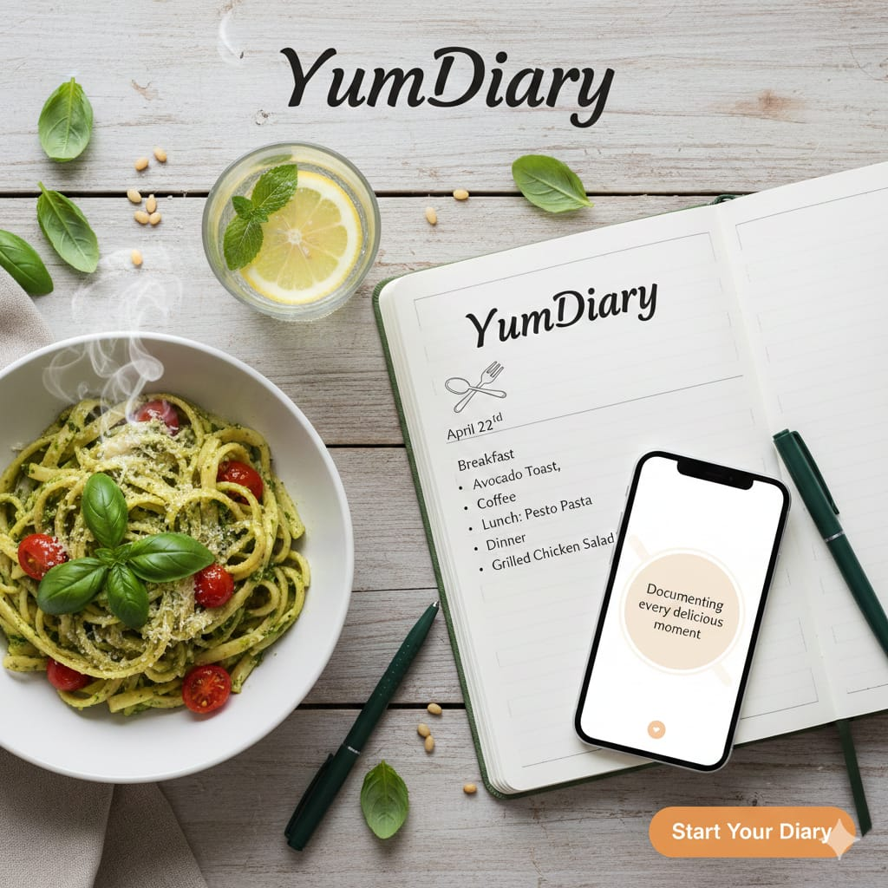

About Us - YumDiary

Our Mission: Making Mealtime Easier
Cooking should be enjoyable, not complicated and YumDiary is here to make sure of that. Start your culinary adventure and let your taste buds explore!
What YumDiary Offers You:
- Categorized Recipes:
Easily find what you are craving - Clear Instructions:
Step-By-Step guidance - Multiple Recipes:
Find hundreds of delicious dishes
Meet The Creator
A Note from YumDiary:
Cooking has always been my passion, but organizing recipes felt like a chore! I launched YumDiary because I believe everyone deserves a simple, fun way to manage their meals.This site is built with love and dedicated to home cooks who want to spend less time planning and more time creating